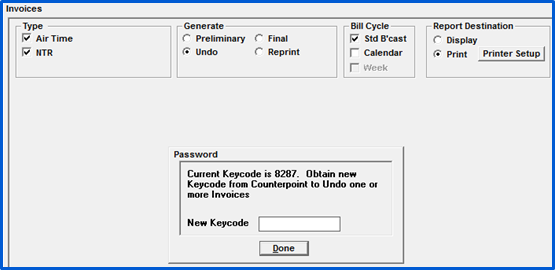
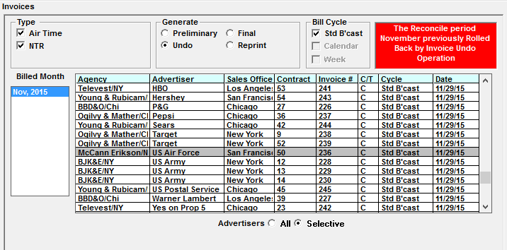
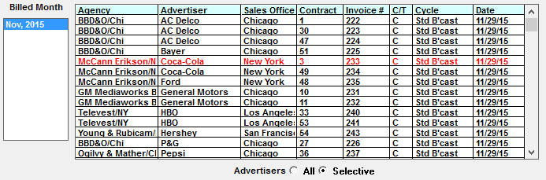
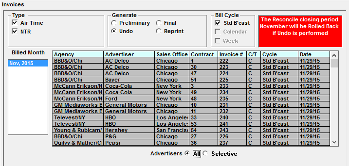

Undoing Invoices
You may have an invoice that needs to be corrected and rebilled. The Undo option ‘negates’ the invoice revenue and unbills the spots for the invoice allowing you to make these corrections and produce another final invoice for the contract. When the new invoice is generated, a new invoice number is assigned and accounts receivables are updated with the correct amount. Invoices can only be undone for the last billed period.
Undo Procedure
Select the type of invoicing, select Undo, and enter the new key code password from Support@counterpoint.net.

Undoing a Single Invoice
Click on the invoice that you wish to undo and click Process.

Undo ‘Red’ invoices
Invoices that cannot be unbilled are shown in red on the display screen. The reason the invoice cannot be unbilled is shown when you mouse on the line with the advertiser.

Here are common reasons an invoice cannot be unbilled and their solutions:
- Adjustments or Journal Entries were posted to the invoice: Go to Collections and Reverse the transactions that were applied to the invoice. You will then be able to undo the invoice.
- The invoice was zero balanced and is now in history. Go to Collections and restore the invoice from history.
- The Invoice was previously unbilled. Alter the contract if needed and rebill the invoice.
Restore History Invoices
In the Collection Screen:
- Select the payee
- Choose Cash History in the Type
- Change the Action to Restore
- Press the Tab key
- Once you press the Tab key, there will be a Date Range option, leave the default and select done or edit the dates to show only last month transactions
- The background will change to blue and all transactions that are in history will be shown
- Click on the invoice that you want to restore, all transactions that zero balance that invoice will change to red
- Click the Save button and the transactions will be moved to the current A/R
- You can then undo the invoice
Unbilling All Invoices
Select the month to Unbill and select the “All” radio button.

A warning message will appear. Enter the keycode obtained from support@counterpoint.net, and click Done.
All invoices will be selected automatically. Click Process.
After Undoing an Invoice
Once you have unbilled, there are additional steps that should be followed:
- Correct the original invoice issue
- Make any necessary adjustments
- If entries had been made to the General Ledger, be sure to make Journal Entries to reflect the undo changes
- Once all changes have been made and verified, rerun Final Invoicing for all contracts
- Once completed, you should get a green screen, with the “All Spots Billed” message. Any rebilled final invoices for agencies or direct advertisers that use the PDF email feature will be emailed a new invoice.
- To confirm the month is completely billed, you can check the last invoice dates in Site Options -> Invoices if you have access
- Re-Export to AR information to the General Ledger
- Regenerate and redistribute any pertinent financial reports
If you have unbilled a period that was previously closed, the system will reopen the month and restore any items that were Zero Purged during that month.
- Rerun Zero Purge to move any zero dollar items to History
- Run Reconcile a second time to reclose the period
- You can verify the period was closed correctly by checking the reconciliation dates in Site Options -> Accounting